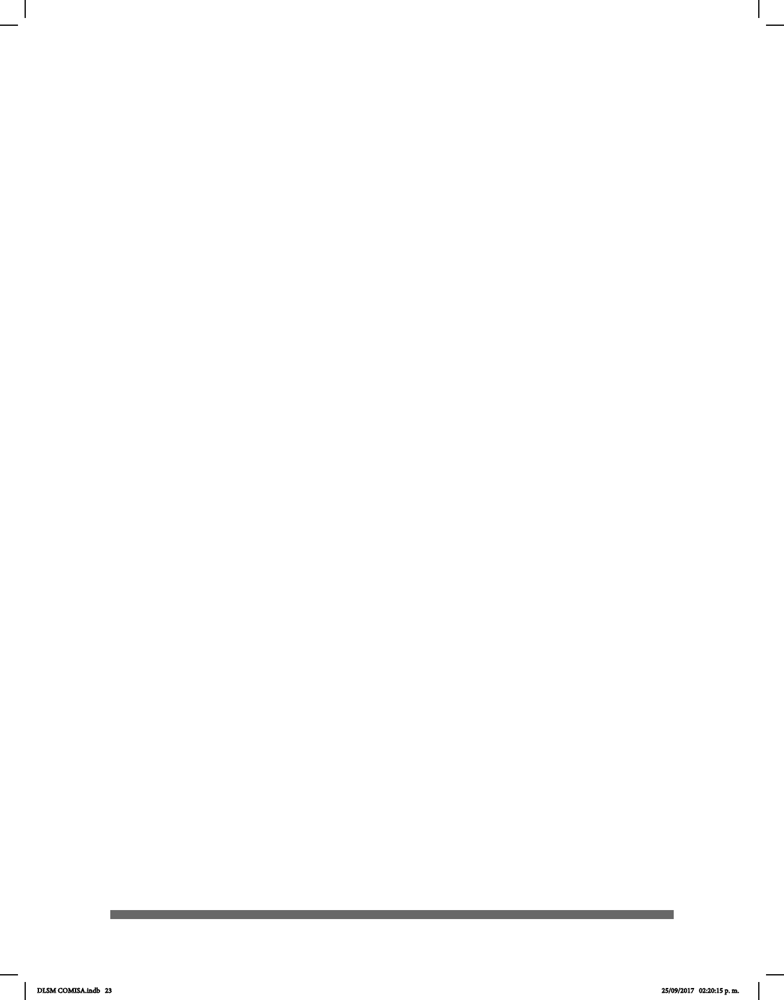

23
los informantes sordos utilizan en sus actividades como comida, familia, animales,
transporte, ropa, salud, religión, política, educación, profesiones, ocina,
sentimientos, colores, naturaleza, deportes, referencias temporales y verbos. Se trata
de un compendio de señas destacadas para la comunidad que coinciden con los
parámetros de esta obra, es decir, que su articulación se realiza a partir de al menos
una de las siete conguraciones manuales que fueron consensuadas para este tomo y
que son utilizadas por los habitantes de la Ciudad de México originarios de la LSM. Los
objetivos por alcanzar pueden resumirse del modo siguiente:
• La compilación y selección de las conguraciones manuales para el Diccionario
de Lengua de Señas Mexicana en la Ciudad de México.
• La difusión de los conocimientos lingüísticos y cultura sobre la LSM a través de
la investigación bibliográca y del consenso de la Comunidad Sorda.
• La investigación y rastreo, para crear una línea del tiempo de los diccionarios y
personajes históricos importantes en la promoción, preservación y difusión de la LSM a
nivel nacional y de la Ciudad de México en particular desde 1867 hasta 2017. Así como
un panorama internacional del tema.
• La exposición de propuestas para el contenido del diccionario, tales como la
introducción, el índice, información lingüística y gramatical, selección de la denición
de la LSM, la modalidad, clasicadores y ajos, así como de los rasgos no manuales y
la expresión facial.
• La exploración de la importancia de incluir el marco legal que apoya a esta
lengua y lo que signica la comunidad y la identidad sorda.
La relación de trabajo entre los investigadores oyentes y sordos señantes nativos de
la LSM fue muy cordial y contribuyó al gran éxito de la investigación. Las personas
sordas son los mejores maestros de su lengua, su participación en el proyecto
fortaleció la comprensión de la LSM, permitió una visión más amplia de su lengua y
proporcionó evidencia importante para sustentar esta obra. Asimismo, los compañeros
sordos compartieron sus conocimientos y contribuyeron a recolectar las señas que
conforman el DLSM, cuya elaboración estuvo constituida por cinco fases:
Primera fase.- Formación. Se crearon talleres de capacitación, se denieron las
técnicas de investigación y la metodología necesaria para elegir el modelo de
diccionario que se deseaba elaborar, así como para detallar los parámetros que
incluiría dicha obra. Se impartieron sesiones de gramática de la LSM a los participantes
sordos y oyentes.
Segunda fase.- Recolección de datos. Esta fase consistió en la recolección de señas,
para la cual se contó con el apoyo de usuarios señantes provenientes de diversas
partes de la Ciudad de México que utilizan la LSM como primera lengua. Para
comenzar con la elección de las señas, se expuso al quorum de sordos el concepto
conguración manual. De acuerdo con una primera seña prototípica se eligieron
variantes de la misma para poder reconocer el léxico de la lengua que se efectúa bajo
esta característica.
DLSM COMISA.indb 23 25/09/2017 02:20:15 p. m.